AI-powered Investment Advisor
By Bisma Munawar
My complete AI-native flow for building an AI product: research, strategy, PRD, brand, design system, prototype, UX audit and synthetic user testing.
Company X, anonymised
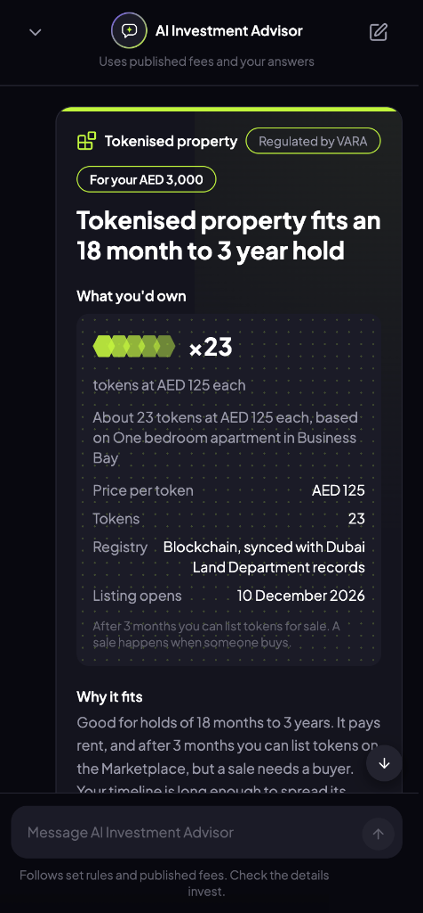
Let me start with what I built, so the rest makes sense
A beginner opens Company X's app and sees three ways to invest: gold, tokenised property and fractional property. The advisor asks them how much money they have and when they'll need it back. Then it recommends one option for that money, explains why the other two lost, shows the cost in dirhams, and lets them invest right there. And if the money shouldn't be invested at all, it says so.
Forty seconds of the real thing
Press play for a quick look at the working prototype before we go back to the beginning.
Short product clip
Press play. 41 seconds, with sound.
Step one. Here's the brief I was given, in its own words
“Imagine a fintech launching an AI-powered investment advisor inside its app. Help everyday retail investors, many with limited financial literacy, get personalised guidance without the cost of a human advisor. It should build engagement and trust, not just be a novelty chatbot.”
Define the core need
Guidance, trust, literacy, convenience. Be specific.
2 to 4 key screens
Requesting advice, the recommendation, how trust and explainability are handled.
A point of view on trust
Explainability, transparency, human fallback.
MVP vs scaled vision
What ships first, what comes later.
Success in one line
Engagement, retention, trust, adoption.
I'd be judged on: problem clarity · solution creativity and feasibility · trust and compliance instinct · roadmap thinking · craft.
Before I designed anything, I wrote down what I thought the problem was
A brief, a company with three products in its app, and no customer in front of me. Just my own beliefs about who struggles and why.
I wrote the problem statement in full and marked every single line as an assumption. That way, when the research came back, I could see what survived and what didn't.
This was my first guess at the problem. Every line here is an assumption Assumption
UAE residents, 22 to 48, with AED 3,000 or more a month to invest
Beginners. Either never invested, or less than a year in. Already inside an investment app, but not sure which option is right for them.
They can't choose between gold, tokenised property and fractional property
They don't know how the three differ on risk, liquidity, returns, ownership, fees and time horizon, or what those differences mean for their own life. So they research everywhere, ask people, or leave the money in cash.
One clear best-fit recommendation, explained, that you can act on in the app
Use what the app already knows plus a short conversation to recommend one option, say why it beats the other two, take follow-up questions, and let the user invest without leaving.
A founder-style hypothesis backed by desk reading. I hadn't spoken to a single customer. The segment, the AED 3,000 line, the three-product choice and whether anyone would trust an AI recommendation were all unproven at this point.
Then I went looking for the customer's own words
I had a problem statement made entirely of assumptions and three open questions that only customers could answer. I had no customers to interview inside the case study window.
I ran deep research on the places where UAE retail investors already talk about money: Reddit, Trustpilot, LinkedIn, Hacker News, Indie Hackers and Product Hunt. I labelled every finding by how much I could trust it.
 Reddit
Reddit Hacker News
Hacker News Product Hunt
Product HuntWhere I looked, and what I left out
I pointed the research at platforms where real customers complain, ask questions and compare products. If I couldn't verify a source, I didn't use it.
RedditHacker NewsProduct Hunt G2
G2 YouTube
YouTube X
X| Source | What it gave me |
|---|---|
| The most recent and most direct UAE retail investor voice. The AED 30,000 and AED 320,000 threads, the emergency fund thread, the gold app discussions. | |
| Trustpilot | Customer experience with Stake, SmartCrowd, Sarwa, Wahed and OGold. Read as individual reviews, not as verdicts on a platform. |
| Questions about tokenised property: who owns what, how you exit, how it really works. | |
| Hacker News · Indie Hackers · Product Hunt | Adjacent evidence on trust in AI investing tools, ChatGPT workarounds and appetite for simpler products. |
I gave every finding one of four labels
Evidence
Directly supported by customer discussion, reviews, official product information or credible research.
Interpretation
My reading of what the evidence means.
Assumption
Still a belief. It needs real customers to confirm it.
Adjacent evidence
Real, but from outside the UAE or about a different product.
So that later, when we look at any decision in the product, we can trace it back to what it rests on.
Three themes came out of it. The first one surprised me
I expected income to be the dividing line. It wasn't. Someone with AED 30,000 and someone with AED 320,000 were asking the exact same question. The hard part is choosing, not affording.
I have 30,000 AED saved for now… I don't want to keep the money sitting in a savings account.
Everything feels quite unclear at the moment.
I've been trying to search for relevant advice, tailored to my situation, but wasn't able to find much.
A majority of the advice online is tailored towards western nationals.
I want to keep the ability to liquidate it, though I also want to invest it.
Every step has fees.
“What should I invest in?”
“Take what matters about me and turn it into a decision.”
Then I worked out what the product would have to do to win
I knew who I was building for and what they needed. I didn't yet know which of the 27 benefits from the research were expected by everyone, which ones would win, and which ones nobody else was doing.
I sorted the benefits with a Kano model, then benchmarked what the competitors do, then looked at the gap between the two. The strategy came out of that gap. Steps 5 to 9 on the contents page.
First, the Kano model. What's expected, what wins, what surprises people
I took the 27 customer benefits from the research and sorted them into three buckets. Ten of them turned out to be basics, which told me this market is already mature. You can't win on a basic, you can only lose on one.
Everyone expects these. You get no credit for them, and real damage if they're missing.
- Full fee disclosure
- Exit route and timing
- Shariah option
- Short question set
- Plain language explanation
- Downside stated clearly
- Sourced product facts
- Invest in the app
- A named accountable party, and control of your data
The more of this you do, the better people like it.
- One clear recommendation
- Explain why the other options lost
- Translate product mechanics into personal consequences
- Tokenised vs fractional in practical terms
- Net outcome after fees on my amount
- What would change the recommendation
- A human you can reach at the point of commitment
Not expected, and valued far more than their cost.
- Check what the user already holds before recommending more
- Recommend against investing when that's the right answer
- Let users reject the advice without friction
- Remember the goal and check in on it later (roadmap)
Two items I couldn't place cleanly. Showing the reasoning is wanted, but the research doesn't prove it creates trust. Shariah is absolute for some people and irrelevant to others, so I treated it as an early filter rather than a feature. I also borrowed a principle from Graham's The Intelligent Investor: encourage discipline and action, never higher risk.
Then I benchmarked the competition on the things my research said matter. Two rows stood out
Two fractional property platforms, three robo-advisers, and the tool most people actually use. The scores are my judgement, built on each provider's published facts. The full facts table is in the appendix.
The property platforms show you a catalogue. There's no recommendation step at all. The robo-advisers do recommend, but only a managed portfolio from inside their own range. ChatGPT will compare anything you like, but it knows nothing verified about you and answers to nobody.
I also walked two real advisor flows to see what good looks like today
Sarwa for questions-to-recommendation, and IBKR for how a big platform is adding AI. I wanted the patterns worth copying and the ones to avoid.
Sarwa: short questionnaire, then an assigned portfolio
Short onboarding, a named risk profile, a clear minimum, a review step before you commit. Very good at turning questions into a recommendation. But it stops inside its own range. It never tells you why not gold, or why not property.
IBKR: AI added onto a professional tool
Portfolio Analyst, AI news summaries, connectors to Claude, ChatGPT and Grok, and a long disclaimer saying the AI summaries are provided “as is” and unreviewed. Powerful and dense. Not built for a beginner.
What I took forward: keep the question set short and review before you pay (from Sarwa). Show the AI's limits inside the flow instead of burying them in a disclaimer nobody reads (the lesson from IBKR).
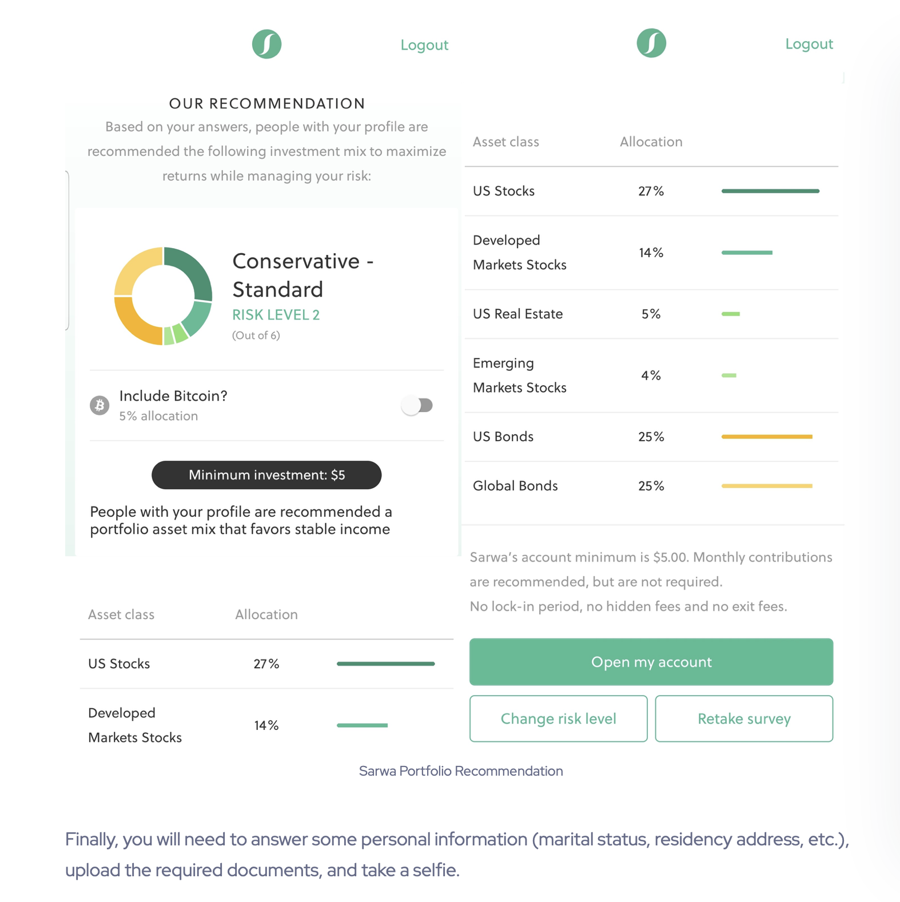
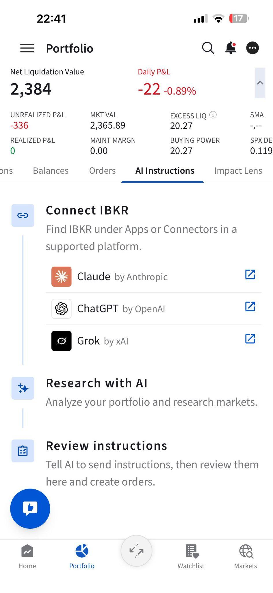
So I rewrote the strategy around two things, and decided to be the best at both
Comparative reasoning at the moment of decision
More than a recommendation. It is the recommendation plus why each alternative lost, in the user's own timeline, liquidity need and amount. This is the one row where every competitor was weak or missing, and it's the thing users were asking for in the research.
An honest scope, including the answer “no”
Tell people when what they already hold argues against more of the same, and when the money should stay accessible. Coming from a company that earns fees when people invest, this is what makes everything else believable.
Company X becomes the only place where someone weighing gold against two kinds of property can get one answer, the reasoning behind it, and an honest no when none of them fit.
Then I turned the strategy into something an engineer could build
I had two things to win on, a list of things not to do, and a list of risks. A strategy on paper. Nothing yet that said how the product would actually decide, or what the AI was and wasn't allowed to do.
I wrote the PRD. One paragraph of purpose, three user states, a rules engine, a contract for the AI's output, the things the model must never do, and a data model that doubles as the compliance record.
The first decision in the PRD was the shape. I chose a guided flow first, conversation second
The brief offered chat, a guided flow, or a hybrid. I went with a hybrid, but with the guided part in charge. Here's why.
Open chat as the front door
A blank text box asks a beginner to already know what to ask. It also invites questions the model can't safely answer. And ChatGPT already does this, for free.
A pure questionnaire that ends in a portfolio
Sarwa, StashAway and Wahed do this well already. It ends in an assigned product with no comparison, which is exactly the gap I'd found.
Up to four questions, one recommendation, then chat if you want it
A structured intake so the decision is deterministic. Conversation only after the answer exists, scoped to this session and this catalogue, with a route to a human for anything else.
Under the rules sit six principles I borrowed from Graham
I'd read The Intelligent Investor while doing the Kano work. These six ideas from it became rules the engine can enforce.
Margin of safety
Never recommend investing money the user might need. Check that the money is investable first.
Investment, not speculation
Recommend on suitability. Never on momentum, and never with recent performance as the reason to act now.
Projections are not promises
Returns are estimates with conditions attached. Say what the number assumes.
Diversification
Concentration is a risk on its own, even if every individual holding is sound.
Costs compound
Fees are certain and returns are not. Always show the fee stack in AED on the actual amount.
The defensive investor
Encourage people to start and to keep going. Never encourage them to take more risk.
And the data loop: how the advisor gets better over time
I wanted the model to keep learning from what actually happens in the app, so I designed three loops that feed back into it.
Recommendation to outcome
Every recommendation stores what was said, why, and what the user did next: invested, asked a question, or left. Reasoning patterns get scored on real behaviour, not on how convincing they sound.
ProfileFact to memory
Answers change over time and the history is kept. The advisor can say “last time you needed this within a year, has that changed?” and the recommendation moves with the answer.
Abandoned intent to a qualified signal
A user explores and doesn't convert. That's expressed intent, which the business will want for re-engagement. I flagged two conditions:
- Data given to get advice was given for that purpose. Using it for anything else needs a separate opt-in at the advisory moment, not a blanket tick at signup.
- Education about the thing they hesitated on passes the “is this advice or sales?” test. A buy campaign doesn't.
I kept that consent separate from the portfolio-read permission on purpose, and left it out of MVP scope.
Then I built it. Brand guidelines first, then the design system, then a working prototype
The PRD said what the product had to do. I still had no visual language for it, and Company X's existing screens had a voice that didn't fit the moment someone commits money.
I wrote the brand guidelines, built the design system from them in Lovable, and wired the prototype with the real rules from the PRD. I wanted something I could audit and test like a product, not a set of mockups.
I wrote the brand guidelines before I drew a single screen
The product needed two voices. A warm marketing voice for the app in general, and a calm, factual voice for the moments when money moves. The advisor lives entirely in the second one.
- Plus Jakarta Sans, sentence case everywhere. Numbers big and first, labels small and grey.
- Indigo for actions and reasoning panels. Lime only for new data and positive figures, so it keeps its meaning.
- Green and red only for figures. Charts use the indigo ramp.
- Motion is kept to a minimum. The recommendation reveal is the one moment that gets choreographed.
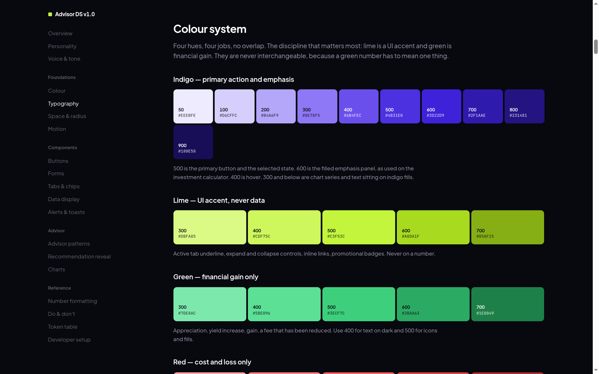
Then I built the design system in Lovable, inside the existing app
I didn't want the advisor to feel like a separate product bolted on. It reuses the app's cards, chips, cost breakdown and detail screens, and adds only the pieces that are new.
Product cards · fee chips · cost breakdown · listing detail · invest and review · bottom nav
Invitation card · one question per screen · thinking state · recommendation card · “the others, for later” · what would change this · suggested follow-ups · permission sheet
One thing I dropped on purpose: a confidence meter. “What would change this” does the same job without pretending to be precise.
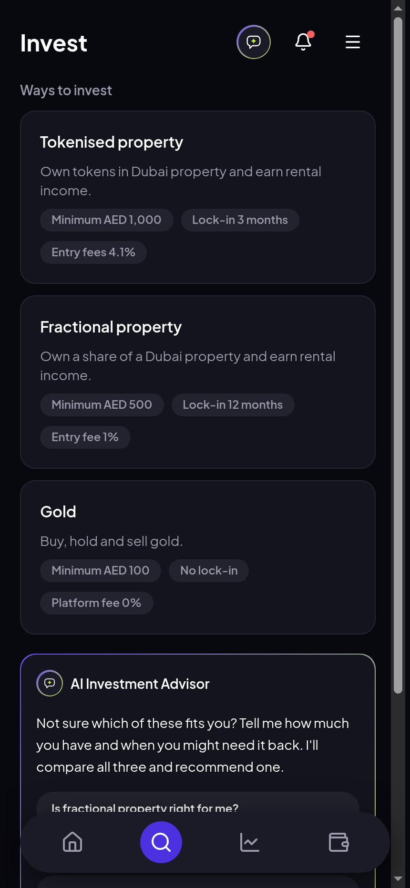
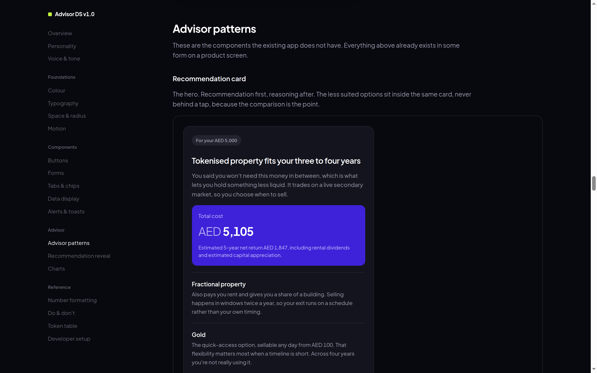
Let me walk you through the prototype the way a first-time user would see it
Someone with AED 20,000 they won't need for five years, and no Shariah requirement. Nine screens from the invitation to the review step.
A split for someone with less money and less time, a returning user who is asked for permission, and the edge cases the rules handle on their own.
It starts with an invitation, not an empty chat box
The user is already looking at the three products. The advisor sits underneath them and asks one scoped question, with three tappable starters. One of them is the question beginners always ask.
- “Is fractional property right for me?” · “I have AED 20,000 for 5 years” · “I have AED 2,000 for a few months”
- You can type, but the structure carries the intake
- Every screen has the same footer: Follows set rules and published fees. Check the details before you invest.
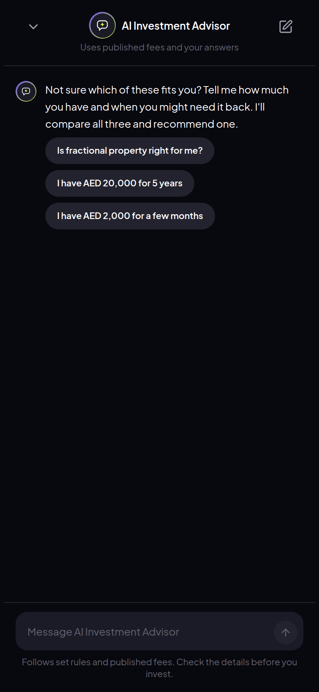
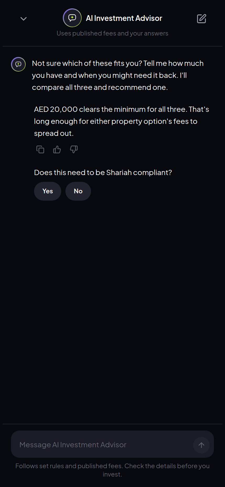
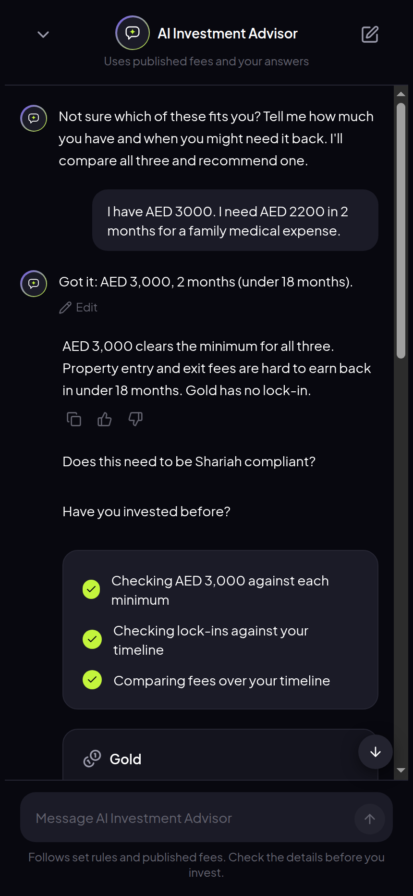
Four questions at most, then it shows its working
The advisor confirms what it heard (“AED 20,000 clears the minimum for all three…”) before it asks the next thing. Shariah is asked once, as a filter.
Checking AED 20,000 against each minimum
Checking lock-ins against your timeline
Comparing fees over your timeline
Those three lines are the rules engine made visible. This is how I chose to build trust, instead of a confidence score.
For someone who already invests, the advisor asks permission to look at their portfolio before it recommends anything
The app already holds their data. The advisor could just use it. Instead it asks: “Want me to look at what you hold with Company X? I'll read your investments, what you paid, rent received and key dates. Just for this chat.” It says exactly what it will read and why: so the recommendation takes into account what they already own, rather than recommending more of the same.
- Asking is how trust is built. A recommendation that quietly used your data feels like surveillance. One that asked first, and then visibly changed because of what it saw, feels like advice
- Scoped and revocable. This chat only. It expires with the session and can be switched off in settings. It is separate from any marketing consent
- No is a real answer. Decline, and the standard flow runs with nothing lost and no second ask
This comes from the AI consent research I read: permission asked at the moment it's needed, with the reason attached, gets more data and better data than a blanket tick at signup.
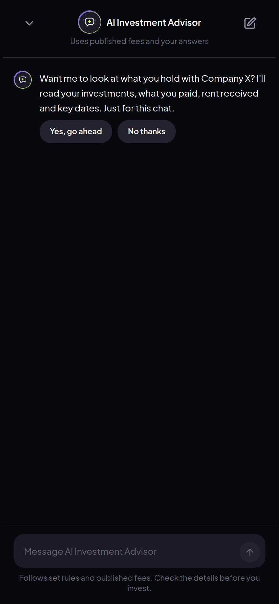
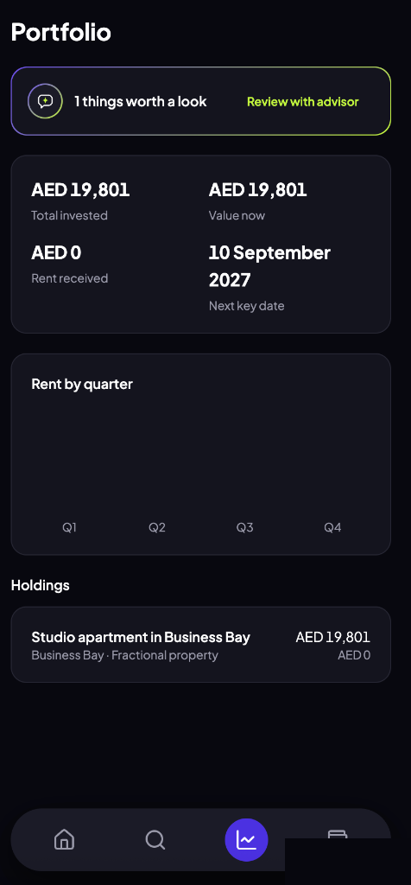
Then I ran a UX audit on the prototype, with Gemini as a second pair of eyes
I had a working prototype. Before putting users in front of it, I wanted to check it against my own PRD and brand guidelines, so that user testing could focus on how people think rather than on issues a designer should catch.
I recorded myself walking the whole flow, then audited the recording heuristically against the PRD and brand guidelines, and asked Gemini for a structural critique of the same recording. This chapter is the audit. Synthetic user testing comes after, and I kept the two apart on purpose.
How I ran the audit
A screen recording, the PRD and the brand guidelines
I walked the AED 20,000 path end to end, then the split and the error states, noting timestamps as I went.
Heuristics, judged against my own spec
Consistency of the interaction model, whether every number matches the user's mental model, cognitive load at the decision moments, error recovery, visual hierarchy, and whether it obeys the PRD.
Gemini as a structural critic
I asked for a blunt critique of the recording. I kept what I could verify and dropped what I couldn't. Everything from Gemini is labelled as an audit input, not a finding on its own.
What it found
| Issue | Fix |
|---|---|
| “Total to pay” was above the user's stated amount. Fees were added on top of AED 20,000 | Fees come out of the ceiling. Next slide |
| A conversation behaving like a form. A live composer during a tap-only intake, and an edit sheet with no Save | Composer gated until the recommendation exists. A real Save. Free text parsed, not shrugged at |
| “Show me scenarios” was a spreadsheet in a bottom sheet. Years across, outcomes down | One scenario at a time, in AED, loss case always shown |
| One error wiped the session. “This page didn't load”, then Go home | Retry the component, never the flow. Session state persists |
| Playback after every tap. “Here's what I picked up… that's right?” | Confirm only when free text was parsed |
| Goal tags at the pay step. A discovery question at the highest-friction point | Optional bottom sheet after confirmation |
| The cost panel shouted louder than the recommendation | Headline leads, cost panel goes neutral |
“Total to pay” didn't match how people think about their money
The user said they had exactly AED 20,000. The card said the total was AED 20,200. The app was assuming they had a spare AED 200 lying around for the fee. At a real payment gateway, that transaction fails.
The audit asked me a question I couldn't dodge: “Are you assuming users treat their stated amount as a baseline rather than a ceiling?” I was. And every quote in my research treated it as a ceiling.
Fees added on top
You invest AED 20,000
Entry fee AED 200
Total to pay AED 20,200
Assumes AED 200 the user never mentioned.
Fees inside the ceiling
You invest AED 19,801
Entry fee AED 198
Total to pay AED 19,999
“Fees are taken from your AED 20,000.” The same line appears again at review.
And three things that were working well, which I kept and protected
The thinking state
“Checking AED 20,000 against each minimum” instead of a spinner. It does exactly what the PRD's show-the-reasoning requirement asked for.
The recommendation structure
The product, then why it fits in the user's own words, then why the other two lost. It mirrors the output contract block for block.
The figures
Tabular numerals, aligned columns, no monospace for money. The design system's rules held up under real content.
Knowing what works matters as much as knowing what doesn't. These three became my regression checks for everything I changed afterwards.
Here's what I changed after the audit
Four groups of fixes. Each one traces back to a finding from the audit.
Fees inside the ceiling
AED 19,801 + 198 = 19,999. The same figures on the card and at review.
A stable engine
Composer gated until the recommendation. A real Save action. Errors retry in place and the session survives.
Review before you pay
No investing straight from a chat tile any more. Listing, then review, then confirm, with “what happens next” dates.
Goal tag as a bottom sheet
Optional, after confirmation. It feeds ProfileFact for check-ins later.
The audit fixed the things a designer can see. What it can't find is what happens when a real person explains their situation in their own words and the product misunderstands them. For that I needed users.
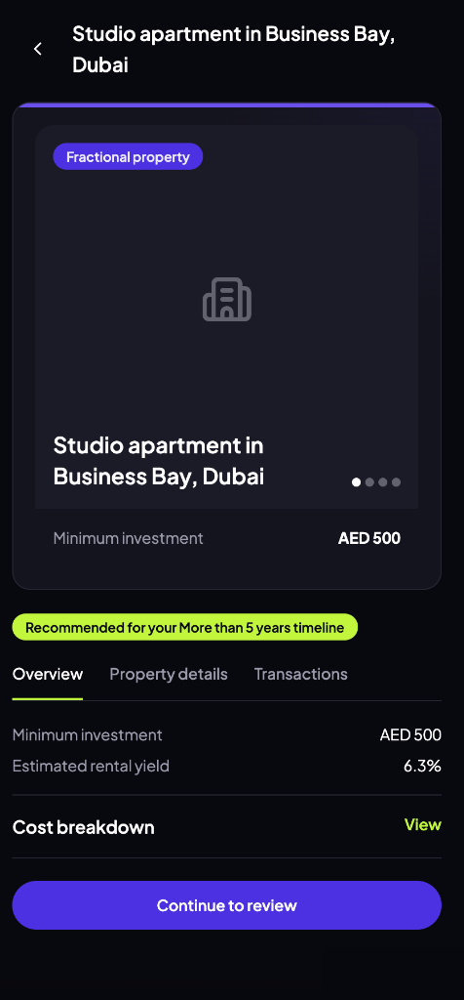
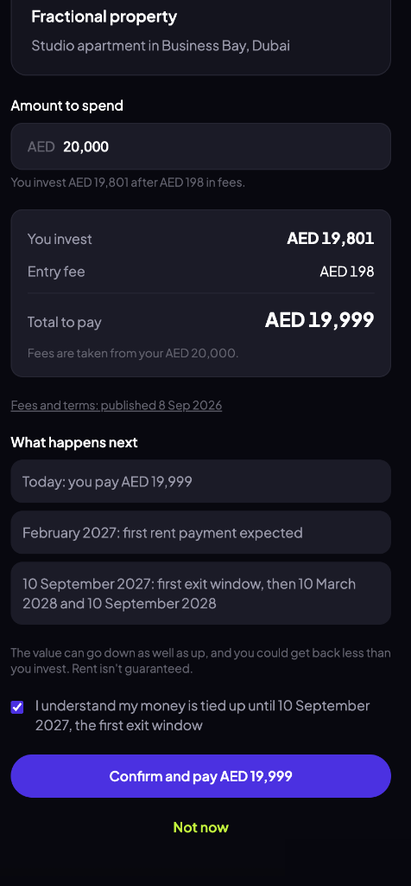
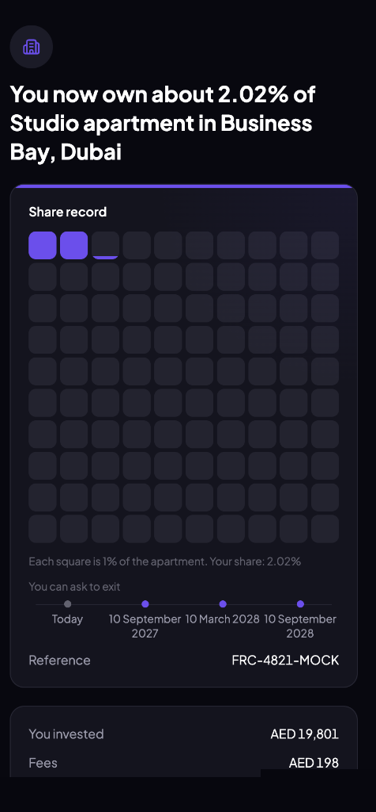
The same numbers, three times over
The recommendation, the review and the confirmation now show the identical breakdown. AED 19,801 invested, AED 198 fee, AED 19,999 total. The user never meets a new figure at the moment they pay.
- The amount field is the stated budget, and the line under it does the fee maths out loud
- “The value can go down as well as up… Rent isn't guaranteed” sits above the button, not in a footnote
- Not now is a real exit at the last step, not just a back arrow
Then I user tested it with six synthetic users, each with a different personality
The audit had fixed what I could see. I still didn't know what would happen when someone described their own situation in their own words and the product got it wrong. I had no real customers to find out with.
I built six synthetic users on the OCEAN personality model, each designed to break a different promise the product makes. Then I had GPT Astra, an agentic model, drive the live Lovable prototype through 22 scenarios in a real browser, one persona at a time. I'm careful throughout about what this can and can't tell us.
Why synthetic users, and what I used them for
A UX audit finds what a designer can see. It can't find what happens when a person explains their situation and the product misunderstands them. For that you need a user, or the closest honest stand-in you can get.
- What it's for: finding failure modes before real-user research, so that research tests the right things
- What it's not for: representing demographics, proving demand, or proving anyone would invest
- Each of the six is built to break a different promise the product makes
The app's responses were observed. The people's reactions, quotes, trust scores and decisions are simulated. They tell me what to investigate with real users. They are not customer feedback and they are not proof of demand.
Six synthetic users with six different personalities: two new, two returning, two constrained
I mapped each one on the OCEAN model (openness, conscientiousness, extraversion, agreeableness, neuroticism), then added a money mindset and a limit on how much they'll read, so they behave differently in front of the same screen.
Maya · a true beginner
Accepts guidance, guesses at terms, skims. Worries about losing money but won't read the detail that explains it.
Arjun · the skeptical researcher
Wants evidence, questions tokenised vs fractional. If a big question stays open, he leaves to research.
Omar · heavy on property already
Trusts the app, defends his property picks, thinks several properties means diversified.
Leila · privacy first
Reads permission requests carefully. Repeat asks make her suspicious. A clean decline builds trust.
Ayesha · small amount, strict on Shariah
If compliance isn't clear she cannot proceed. Checks with family when she's unsure.
Daniel · money that already has a job
Access to the money matters most. “Liquid” can sound like “safe” to him. He tests whether the product can recommend less.
I paired them up so each pair would pull the product in opposite directions
Six people who should behave in six different ways on exactly the same interface.
| Pair | What the contrast tests |
|---|---|
| Maya and Arjun | Both need an explanation, at opposite depths. The essentials have to be visible without digging, and the reasoning has to be there for anyone who wants to inspect it. |
| Omar and Leila | Personalisation has to earn permission, and the guidance has to stay complete when permission is refused. |
| Ayesha and Daniel | Different conditions, same rule: something non-negotiable that can't be traded away for a convenient recommendation. |
Personality spread (1 to 5)
| Open | Detail | Social | Defers to guidance | Uncertainty | Mindset | |
|---|---|---|---|---|---|---|
| Maya | 2 | 1 | 4 | 5 | 4 | Avoidant |
| Arjun | 4 | 5 | 2 | 1 | 5 | Cautious |
| Omar | 3 | 3 | 3 | 4 | 2 | Status |
| Leila | 2 | 4 | 1 | 2 | 5 | Growth |
| Ayesha | 1 | 4 | 5 | 3 | 4 | Cautious |
| Daniel | 3 | 2 | 4 | 2 | 5 | Avoidant |
Maya can accept a recommendation without understanding it. Arjun can understand it and still not trust it. Full persona sheets are in the appendix.
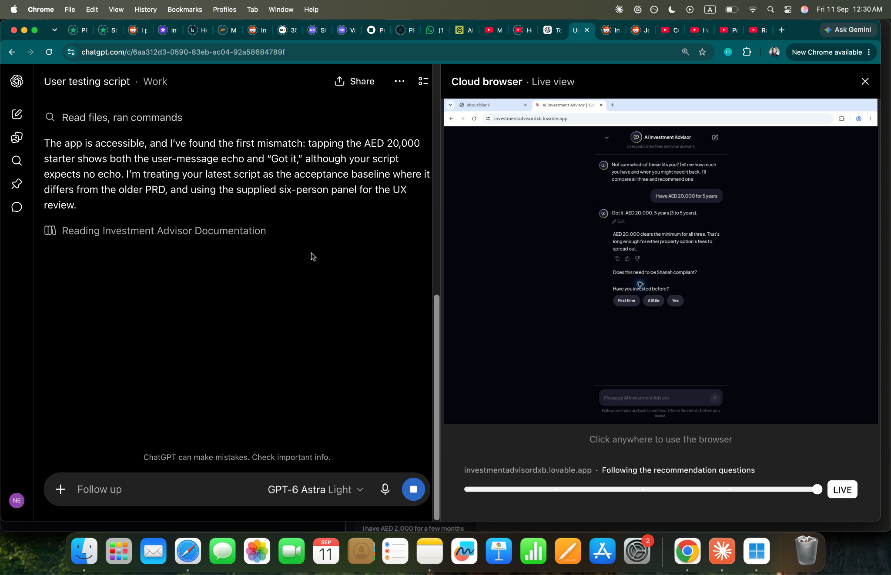
Then I ran them live on the real prototype, not as a thought experiment
I used GPT Astra in its agentic environment. It had its own virtual computer and I could watch it interact with my Lovable prototype, a bit like a Hotjar session replay but live. I gave it the 22 scenarios, the six persona sheets and the PRD, and it reported what the app did against what the PRD said it should do.
- 10 and 11 September · desktop Chrome at mobile width · reset between independent journeys
- Each persona walked their own path: their amount, their timeline, the concern that defines them
- The app's behaviour was recorded word for word. The persona reactions were written afterwards as simulations
Next slide: a short recording of one of these sessions.
GPT Astra live-testing the Lovable prototype as one of the synthetic users
Press play · 25 seconds · with soundGPT Astra live testing
assets/video/astra.mp4
The agent reads the persona sheet, drives the real prototype in its own browser, and logs what the app did against the PRD. What the app did is observed. How the persona felt about it is simulated.
Daniel: “This money has a job already”
I have AED 3000. I need AED 2200 in 2 months for a family medical expense.
The app picked up AED 3,000 and two months. It ignored the AED 2,200
It recommended investing all AED 3,000 in gold.
He repeated the concern. The app read “2,200” as a new budget
Now it said AED 1,700 accessible and AED 500 in gold. Still not his reserve. Trying to clarify made it worse.
Recognising a number is not the same as understanding what the number is for. The prepared AED 2,000 starter produced a perfect split, so the logic was there. Daniel's own words never reached it.
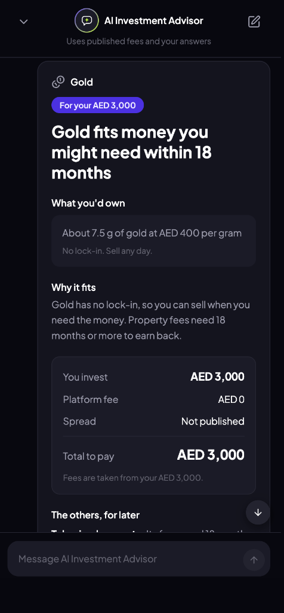
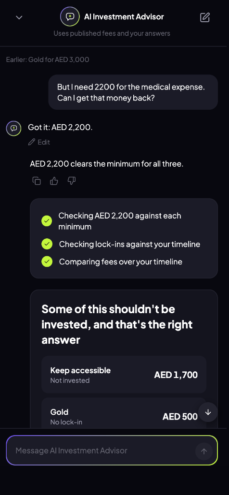
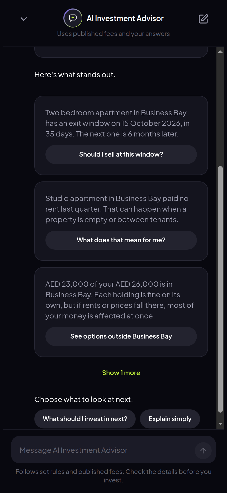
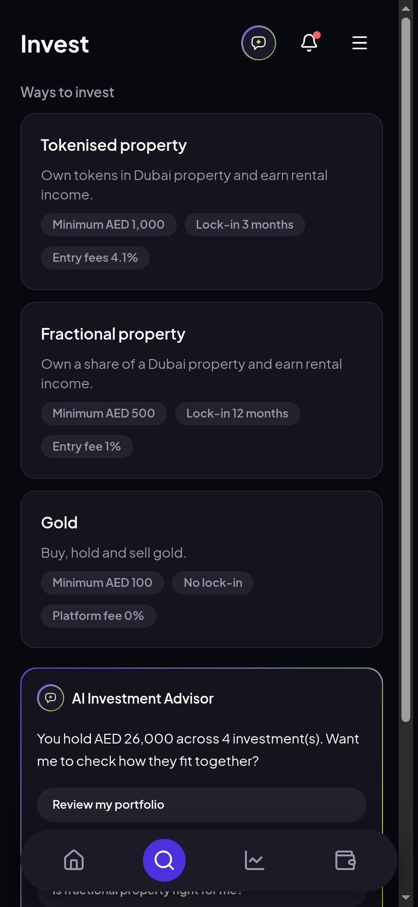
Personalisation became believable once someone could point at what it changed
- Omar: “It showed me another area because I already have a lot in Business Bay.” The listings visibly changed.
- Leila: “No thanks” held. She asked again in the same chat and got no second request. The recommendation and review were still reachable.
The returning entry screen already showed the portfolio total and the number of holdings before asking permission. So what exactly was the advisor asking to access? The stated boundary has to match what the advisor shows and uses.
A smaller one from Omar: after “25000 for 5 years” it asked for the timeline again. Recoverable, but it felt inattentive.
How trust changed through each journey, and what changed it
These are simulated scores from 1 to 5. I kept them only because they make the pattern easy to see. I also kept three questions separate: do I trust the company, do I trust the AI to understand me, and does this recommendation make sense.
| Trust in the AI: start → recommendation → end | Confidence in the decision | |
|---|---|---|
| Maya | 4 → 4 → 2 | 2 → 2 |
| Arjun | 1 → 2 → 2 | 2 → 3 |
| Omar | 3 → 4 → 4 | 3 → 4 |
| Leila | 2 → 2 → 3 | 3 → 3 |
| Ayesha | 3 → 2 → 1 | 2 → 1 |
| Daniel | 2 → 1 → 1 | 2 → 1 |
What moved it
- Up: seeing your holdings change the answer (Omar), a refusal that was respected (Leila), maths you can open up (Arjun)
- Down: a risk question left unanswered (Maya), a requirement asked about and never resolved (Ayesha), a reserve invested and then a correction that failed (Daniel)
Arjun can follow the arithmetic and still not trust the assumptions behind it. Leila can appreciate that the company respected her refusal and still question the advice. A good experience in one area doesn't settle the others.
Here's what the testing made me change
Six journeys and one critical failure: the product had recommended investing money a person needed for a medical bill. I had a list of findings ranked by how much damage each one could do.
Four design changes, each one traced to a specific finding, plus a handful of smaller fixes. And a rule I borrowed from the test report: I only call something fixed if I changed it and then retested it.
Change 1. Set the reserve aside before recommending anything
The advisor now separates money you have from money you can invest. When someone says they need part of it, that creates a reserve. It can never be read as a new budget.
“I need 2200” meant a new budget
It recognised AED 3,000 and two months, and recommended all of it into gold. When he corrected it: AED 1,700 accessible, AED 500 in gold. The reserve was never protected.
“I need 2200” means a reserve
The reserve is acknowledged first. The questions then run on the AED 800 that's left. That's below the property minimums, so it's gold or keep it accessible. Both are honest answers.
Essential money recommended into an investment went from AED 2,200 to AED 0. I can say that because I retested it.
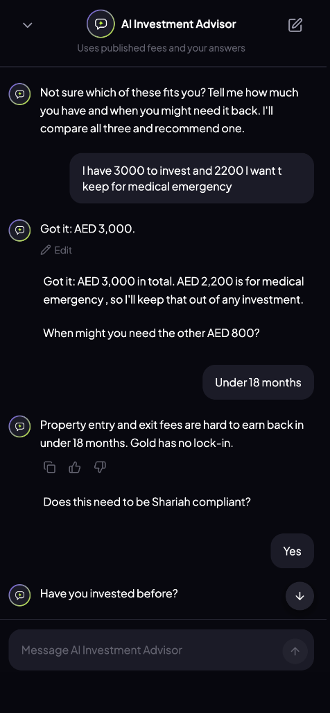
Change 2. The amount someone states is a ceiling
No extra cost without an explicit choice. My first attempt added a “put fees on top” toggle. That read like an upsell, so it went. Now fees come out of the amount, and if that would push the investment below a minimum, the advisor asks first.
19,801 + 198 = 19,999
Same figures on the card and at review. Observed in testing.
“You'd need to spend AED 505 to invest AED 500.” Then two buttons: Spend AED 505 or Change amount
The test report called this a useful budget boundary.
Totals above the stated budget went from every property recommendation to none. This is the safest claim in the deck because it's already fixed and was observed working.
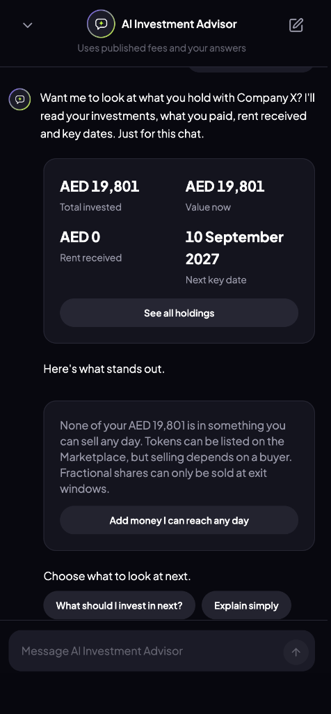
Change 3. Personalisation the user can point to
In my own runs, “Review my portfolio” replayed an old recommendation, and the holdings were double-counted to AED 39,602. It was either broken or showing data before asking for it.
- Every use of holdings now shows up as a specific change the user can name: “It also spreads you beyond Business Bay”, with the Business Bay listings left out
- Declining keeps the full journey and produces no second ask. Verified on both asks in Leila's run
- Still open: the returning entry screen shows portfolio totals before consent. The boundary copy has to match what the advisor can actually see
Portfolio review went from broken to three insights plus listings that know which area you're already in.
Change 4. Give each product its own identity
Fractional and tokenised property shared one layout, one indigo badge and one surface. Only the words changed. My panel predicted the problem: when the two look alike, Arjun goes looking for the structural difference somewhere else.
Own a share of a Dubai property. Exit windows every 6 months after month 12.
Own tokens in Dubai property. Built for 18-month to 3-year holds.
Buy, hold, sell any day. No rental income. Not a replacement for cash.
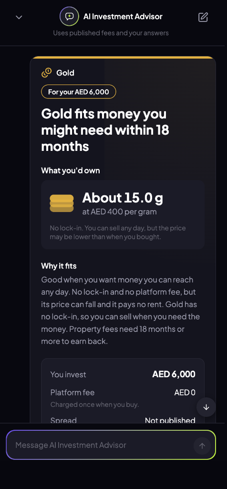
Change 4, on the screens. Tokenised property and gold, before and after
Before, every product got the indigo badge and the same card. After, each one has its own colour on the icon, the badge and the card edge, and copy that says what makes it different.
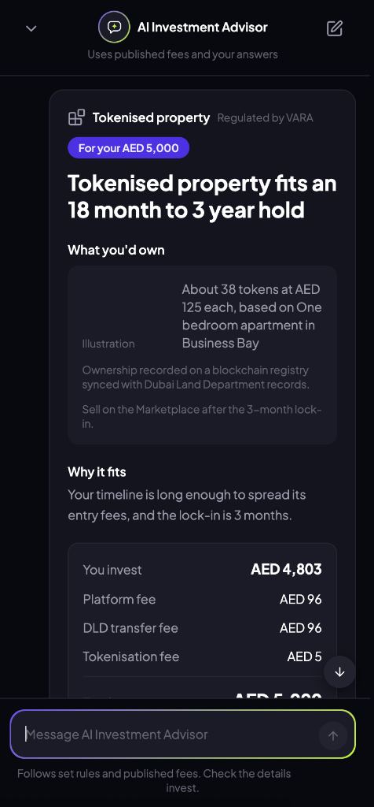
Plus three smaller fixes from the report
Small on their own. Each one closes a specific misunderstanding one of the personas had.
| Change | Who it helps |
|---|---|
| The scenario heading now reads “Estimated gain or loss after 3 years, after all fees”, with plus and minus signs, and the 6% rent assumption stated above the figures | Maya shouldn't have to open the maths to know what the number means |
| The split is explained next to the amounts: accessible cash is not invested, and gold can lose value even though it has no lock-in | Daniel. Being able to get the money out is not the same as it being safe |
| Every alternative gets a fair introduction: what it's for, then why it lost here | Maya and Arjun. “Gold doesn't make money” is the wrong thing to take away |
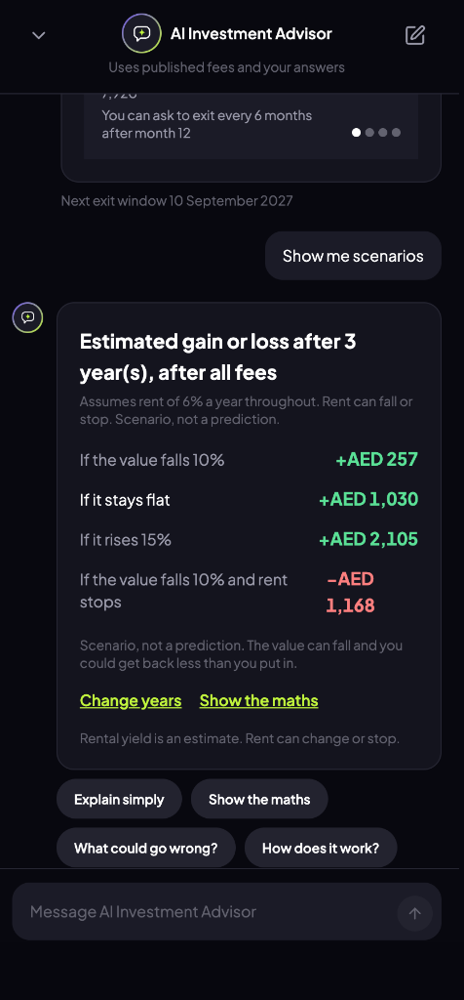
What I'm not claiming as fixed: the Shariah confirmation, ordinary risk questions like “Can I lose my money?”, and portfolio facts shown before permission. Those are the next things I would fix.
So this is where the product landed
Three options. One recommendation built around you. Understand why it fits, ask anything, and invest when you're ready, or don't.
The six screens that carry the whole journey, then what happens after the money moves, and a few smaller decisions I made along the way that I think are worth talking about.
The product, end to end
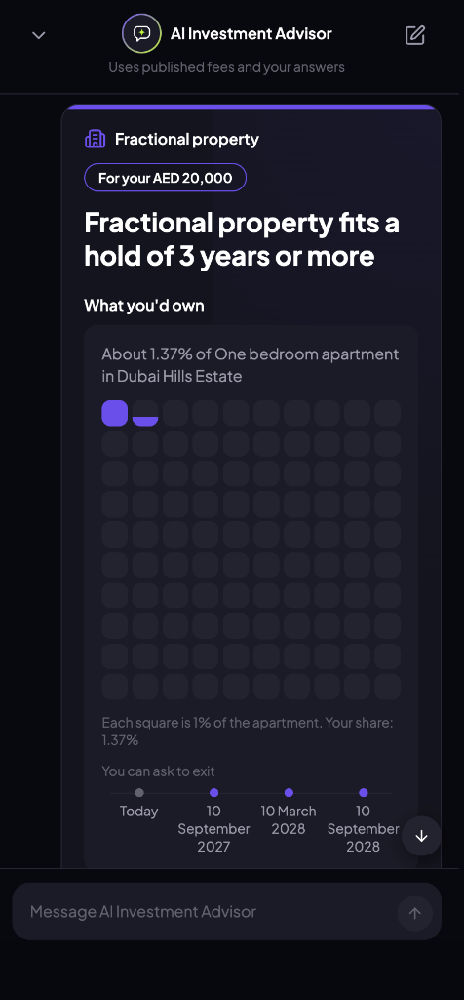
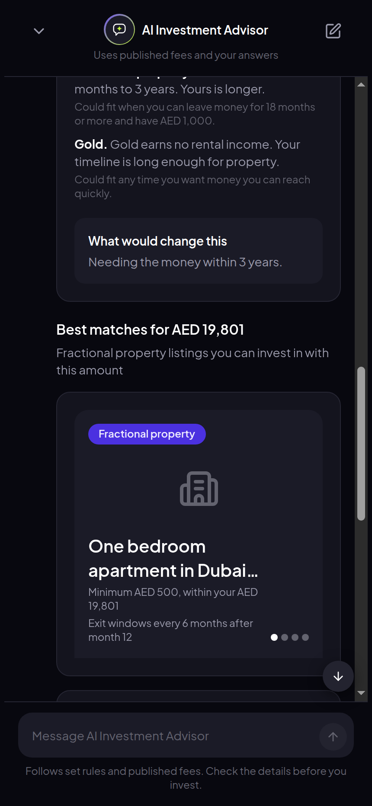
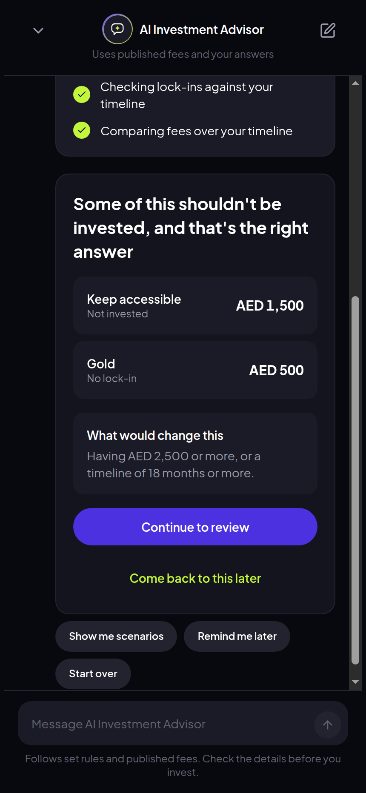

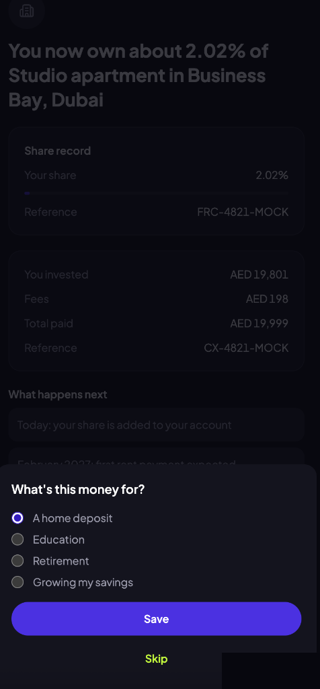
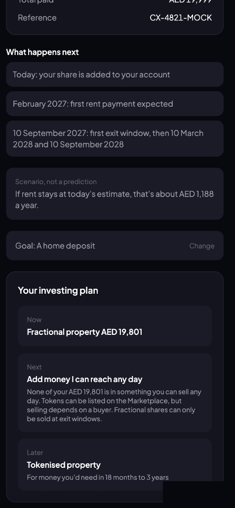
The advisor doesn't stop at the purchase confirmation. The next screen helps you decide which goal this investment belongs to
The confirmation names the share (“about 2.02% of Studio apartment in Business Bay”), repeats the same three cost figures, and turns the future into dates: first rent, first exit window. Then a bottom sheet asks what this money is for, so the investment gets tagged to a goal.
- The goal is asked once the decision is made, never as a gate in front of it. You can skip it
- Tagging a goal is what lets the advisor check in later: “what would change this” becomes a reminder tied to something you care about
- An investing plan turns the next step into a list: add money I can reach any day now, then tokenised property later
Six smaller decisions I'd like to talk about
None of these is the headline. Each one took real thought.
Under the products, not instead of them
The advisor is a layer over the catalogue, entered from the Invest home. It never replaces browsing.
An empty portfolio points you to the advisor
“You don't hold any investments yet” comes with Ask the advisor, so the empty screen leads to a decision.
Ask first, scope it, make no a real answer
Reading your holdings is asked for at the moment it's needed, with the reason attached. It is separate from any other consent.
One animation, everything else quiet
The checks tick in, then the card lands. That is the only orchestrated motion in the product.
After the money moves, not before
An optional sheet after confirmation, not a gate at review. It feeds later check-ins.
“Reachable” is not the same as “safe”
The split says accessible cash is not invested, and gold can lose value even though you can sell it any day.
How I'd know it's working once real people use it
A product that had been audited and tested, with a clear list of what's fixed and what isn't. The next question a PM would ask me is how we'd measure it. So I answered that before anyone asked.
I went back to the data model. The Recommendation table is both the compliance record and the metrics table, and nothing ever writes over it. That means every metric on the next slide can be answered from day one.
Five metrics, all of them coming off one table
Recommendation to invest
Do people who reach a recommendation invest at a higher rate than people browsing products directly? This tests whether the recommendation actually converts.
Coming back for a second decision
This tests whether they trusted the first one. It's the assumption the whole product rests on.
Share of sessions ending in a split or “not now”
Tracked from day one. I'd want the tolerable range agreed before launch, because someone will ask.
Portfolio-access grant rate
Tells us whether the ask is worded well, and reads directly on how much people trust the product.
Drop-off between recommendation and listing tap
If they read it and never tap, the narrowing isn't working. The hand-off is the problem, not the advice.
Plus one health metric that came straight out of testing: drop-off at any question that falls back to “I didn't catch that.” Every one of those is a Maya moment.
The roadmap. What's in the MVP, and what waits until the metrics earn it
- A hybrid advisor: tap or type, fixed rules pick, the AI explains
- One recommendation, the other two “for later”, fees in dirhams, scenarios that always include a loss
- Reserve before recommend · Shariah as a filter · portfolio review by permission, which leads to insights
- Review before paying, and a human fallback for questions out of scope
- Help with exits and selling. Sell-now versus hold maths before an exit window, and help listing tokens
- Retention. Opt-in check-ins, progress against the remembered goal, what to do with rent received
- A deeper human fallback. “Talk to a person” hands off to a licensed advisor for large amounts and tax questions
- Property consultation. Referral to a human expert for buying a whole property
I prioritised this MoSCoW-style. Everything in the MVP is a Must or a Should. V2 stays a Could until the first two metrics move.
Getting to an answer is easy. Knowing it's the right answer for you is the product
Testing is what separated an experience that looked finished from the moments where it still had to earn trust. If I took this into a real build, I'd take these things with me: rules that choose, a model that explains, a reserve set aside before any recommendation, and a product that is willing to say “not this money, not now.”
Thank you
By Bisma Munawar
Happy to take questions. The appendix is right behind this slide if you want the tables.
Research corpus · PRD · brand guidelines · synthetic test report, all available on request
The reference tables
Everything I kept out of the main story so it could flow. Research sources, the full competitor table, published facts, the hypothesis scorecard, Kano detail, all 22 checks, the 12-area scorecard and the data model.
Where the customer voice came from, and what I left out
| Source | Outcome |
|---|---|
| Strongest source of recent UAE retail-investor customer voice. | |
| Trustpilot | Useful for Stake, SmartCrowd, Sarwa, Wahed and OGold customer experience. Individual reviews aren't representative of whole platforms. |
| LinkedIn posts/comments | Useful for tokenised-property questions on ownership, liquidity, mechanics. Commenters can't always be verified as target users. |
| Hacker News | AI-investment trust, explainability and proof concerns. Adjacent, not UAE-specific. |
| Indie Hackers · Product Hunt | Adjacent evidence on ChatGPT workarounds, financial context, personalisation and confidence in AI investing tools. |
| Industry forums | UAE investing communities, incl. SimplyFI / Bogleheads-style DIY alternatives. |
| Quora | Searched; retrieval blocked by robots.txt. No unverifiable quotes included. |
| X/Twitter · YouTube | Public discussion exists but little reliable target-customer conversation on this three-product problem. Not used as primary voice. |
| G2 · Capterra | Categories are B2B software for banks/advisers, not UAE retail products. Excluded. |
Direct alternatives
| Alternative | Type | Does well | Customer complaints / weaknesses | Access | Gap vs. the advisor hypothesis |
|---|---|---|---|---|---|
| Stake | Fractional property | Low-entry Dubai property, fractional ownership, AutoInvest | Liquidity, vacant properties / rent interruptions, regret over concentration | AED 500; published fee stack | Helps select property; doesn't solve gold vs tokenised vs fractional |
| SmartCrowd | Fractional property | Low-ticket Dubai property exposure | Fees, lock-up, exit economics | AED 500; published fees | User still decides whether fractional is right for them at all |
| OGold | Digital gold | Gold without storage friction | Tiny review sample; support/transparency concerns | Very low entry | Solves access to gold, not whether gold fits |
| Emirates Islamic | Bank-embedded gold | Gold/silver inside an existing banking app | Little feature-level review evidence | Embedded | Great in-app access benchmark; no cross-asset recommendation layer |
| Sarwa Invest | Robo adviser | Questions → risk profile → managed portfolio; reviews praise clarity and advisers | Strong counter-evidence to “digital products lack guidance” | USD 500; management fee | Allocation inside its own universe, not this choice |
| StashAway | Robo adviser | Managed diversified portfolios, multiple risk levels | Less relevant for UAE real-world assets | No minimum; tiered fees | Substitute for users who don't want to pick alternatives |
| Wahed | Robo · Shariah | Beginner-friendly halal investing | USD-only funding, withdrawal timing; human support valued | USD 500; annual fee | Shows goal/risk-based digital investing is already familiar |
Indirect alternatives and workarounds
| Alternative | Type | Does well | Weakness | Gap vs. the advisor hypothesis |
|---|---|---|---|---|
| Wio / integrated investing apps | Indirect | Convenience (“very convenient to use”) | Same user felt FX/commission economics outweighed convenience (perception, not audit) | Proves the value of keeping investing inside the existing journey |
| ChatGPT / general AI | Indirect | Conversational explanation, apparent personalisation | User must supply accurate context manually; no verified account or product data; can't execute | Embedded verified context + immediate action is the strongest advantage |
| Google / Reddit / communities | Non-software workaround | Huge volume of real experiences | Conflicting, generic, time-consuming | Doesn't convert the individual's circumstances into one answer |
| Friends / family | Human workaround | Familiar, trusted; ~half of surveyed UAE investors consult family | Opinion-based, not aligned to exact goals/products | Emotional trust that AI may not replicate. This is why there's a human fallback |
| Manual comparison in-app | Product workaround | Direct access to facts, pricing, risk | User does the translation into a personal choice | This is the exact decision layer the advisor improves |
| Cash / do nothing | Incumbent behaviour | Simple, preserves liquidity | May fail longer-term goals | The advisor must first establish the money is suitable to invest |
Competitor facts as published, at time of research
| Stake | SmartCrowd | Sarwa Invest | StashAway | Wahed | ChatGPT | |
|---|---|---|---|---|---|---|
| Type | Fractional property | Fractional property | Assisted adviser flow | Assisted adviser flow | Assisted, halal only | General AI |
| Minimum | AED 500 | AED 500 | USD 500 | None (General Investing) | USD 500 | None |
| Published fees | 1.5% entry · 0.5% annual admin · 0.2% then 0.1% KYC/AML · 2.5% exit · 7% on appreciation | 1.5% entry · 0.5% annual admin · 2.5% exit | 0.85% annual (tiering disputed) | 0.2%–0.8% annual | 0.99% under USD 250k · 0.49% above | None |
| Exit route | 1-yr lock-in, then two-week windows each May & Nov; 3–5 yr recommended hold | Share Transfer Facility, two-week windows each Mar & Sep, or sale by vote | Withdraw anytime | No lock-ins | No lock-in | n/a |
| Shariah option | Yes (DFSA Islamic Window + certification) | Yes (Shariyah Review Bureau) | Yes (halal portfolio, same fee) | Yes (Shariah Global Portfolio) | Halal by construction | No |
| Questions → recommendation | No | No | Yes | Yes | Yes | Conversational only |
Eighteen founding hypotheses against the research
| Hypothesis | Verdict |
|---|---|
| UAE beginner investors struggle to choose | Supported (qual.) |
| People with a few thousand AED/month experience this | Supported |
| AED 3,000/month is the correct threshold | Unvalidated |
| Ages 22–48 are the correct segment | Unvalidated |
| Beginner / <1 yr is a promising pain segment | Directional |
| Users manually research online | Supported |
| Users ask friends/family | Supported |
| Users use ChatGPT | Supported (qual.) |
| Users may delay / do nothing | Plausible, weaker |
| Hypothesis | Verdict |
|---|---|
| Risk, liquidity, fees, horizon drive decisions | Supported |
| Exact three-product choice is common | Unvalidated |
| Users want personally relevant guidance | Supported |
| AI is an acceptable interface | Directional |
| Users will follow one AI recommendation | Unvalidated |
| Explainability matters for trust | Desired attribute |
| Embedded context beats generic AI | Strong hypothesis |
| AI recommendation reduces churn | Unvalidated |
| AI recommendation improves conversion | Unvalidated |
What this testing can't tell us
- Whether a real Maya would ask about loss, or just carry on without noticing what she doesn't understand
- Whether Arjun leaving to research means lost trust, or is just how he decides responsibly
- Whether people separate what the company holds from what the advisor can use
- What counts as enough evidence for a strict compliance requirement
- Whether anyone would act with meaningful money
The limits of the study, stated plainly
- Desktop Chrome at mobile width. Not a real phone, not a screen reader, not keyboard only
- Returning journeys used the fixed AED 26,000 demo portfolio, not Omar's fictional AED 71,000
- Final payment, goal chips, new-holding concentration checks and reduced motion: unverified
- Product claims, regulatory status and backend controls were not independently audited
- No build identifier recorded. Demo dates not independently checked
The five biggest unknowns are still emotional trust, willingness to act with real money, actual privacy choices, how people interpret risk, and the real decision to continue, compare or leave.
Basics: expected, earn nothing, and their absence ends the conversation
| Benefit | Why it sits here |
|---|---|
| Explain products in plain language | Literacy varies inside a single thread: one person suggests the S&P 500, the next asks what it is. Every competitor writes beginner copy. |
| Show how and when money can be withdrawn | Most-raised concern. A fractional platform's own data showed 26% seller liquidity in one exit window. Most people who listed didn't sell. |
| Show all fees, not the headline | The objection is late discovery, not cost. Competitors publish full tables; match, don't lead. |
| State the downside honestly | An investor never shown a bad year is the one who sells during one. Also a compliance expectation. |
| Cite where product facts come from | Nobody praises a citation. Advice without one isn't advice. |
| Keep the question set short | UAE robo-advisers already onboard briefly. Every extra question loses people. |
| Invest without leaving the app | Several UAE apps already do it. Handing off elsewhere destroys the value just created. |
| Shariah compliance status | Absolute for those who need it, weightless otherwise. A filter, asked early. Not a feature. |
| Accountability · data control | Which entity stands behind the advice, under what permission. Noticed only when broken. |
Performance dimensions: more is better, with no ceiling
| Benefit | Why it sits here |
|---|---|
| Give one clear recommendation | Strongest signal. AED 320,000 and AED 30,000. Both had money ready, neither could choose. |
| Explain why the other options lost | A recommendation without comparison reads as a sales pitch. Comparison makes it a decision the user can defend later. |
| Translate mechanics into personal consequences | “One-year lock-in” vs. “you said you might need this in six months, so this doesn't suit you.” Same fact, different job. |
| Tokenised vs. fractional in practical terms | Explain what happens when they want their money back, not the legal architecture. |
| Support follow-up and challenge | “Impossible to test, hesitant to trust.” Depth of conversation separates an advisor from an algorithm. |
| Net outcome after fees and FX | “What will I receive in hand?” Headline percentages don't answer it. |
| State what would change the recommendation | Makes the advice feel considered rather than fixed, and gives a reason to return. |
| Human access at the point of commitment | HSBC 2026: 73% use AI for finance, 12% call it most influential. Reviews of UAE robo-advisers repeatedly praise human contact. |
| Build confidence · reduce overwhelm | “Helped me make the right decisions for my needs” is the sentence the product is trying to earn. |
Observed results, 10 to 11 September. A pass applies to visible behaviour only
| # | Check | Result | Observation |
|---|---|---|---|
| 1 | Tap AED 20,000 / 5-yr starter; no echo | Fail | User-message echo and “Got it: AED 20,000, 5 years” both appeared. Reproduced after reset. |
| 2 | Type “I have 20k for 5 years” | Pass | Exact acknowledgement and Edit appeared. Home composer initially timed out; full-chat composer worked. |
| 3 | Finish typed AED 20,000 journey | Partial | Fractional; 19,801 / 198 / 19,999. AED 1 residual not explained. |
| 4 | Put fees on top instead | Unavailable | No such control found. The toggle was removed after it read as an upsell. |
| 5 | 5-yr fractional scenarios | Pass | 2,822 / 4,752 / 7,440 inline. No plus sign; heading doesn't say “net gain”. |
| 6 | “make it 30k” | Pass, history issue | Updated and re-ran. Earlier scenario figures also changed above the edit. |
| 7 | AED 15,000 / 2 years | Pass | Tokenised; 14,409 invested; fees 288 + 288 + 14. Total within AED 1 tolerance. |
| 8 | 2-yr tokenised scenarios | Pass | −432 / 994 / 3,134. |
| 9 | AED 500 / 4 years | Changed behaviour | Stops first: “You'd need to spend AED 505.” Spend / Change amount. Useful safeguard. |
| 10 | AED 2,000 / few months starter | Pass | 1,500 accessible; 500 gold. Does not generalise to Daniel's message. |
| 11 | “okayy” while quick replies show | Fail | “I didn't catch that” plus starters, rather than activating the first reply. |
Observed results, continued
| # | Check | Result | Observation |
|---|---|---|---|
| 12 | “what's the weather” | Pass | Expected fallback with visible options. |
| 13 | “why real estate” | Pass | Rent and appreciation alongside value loss, vacancy, tied-up money. Two follow-ups offered. |
| 14 | Recommendation → review → Not now | Pass | Returns to chat with reassurance and Remind me later. |
| 15 | Confirm property investment | Partial / blocked | Verification shown, returned to review. Final pay blocked by approval safeguard; post-pay states unverified. |
| 16 | Returning portfolio review / Yes | Pass | Invested 26,000; value 26,480; rent 2,070; next date 15 Oct 2026. |
| 17 | Portfolio insights | Pass | Exit window in 35 days; studio with no rent; 23,000 of 26,000 in Business Bay. |
| 18 | Should I sell at this window? | Pass | Exit 258; receive ~10,022; overall 722 up. Asks whether money is needed within six months. |
| 19 | New investor's concentration notes | Blocked | Requires a new holding after final confirmation. Not verified. |
| 20 | Decline permission and ask again | Pass | “No problem. I'll go by what you tell me.” Both times. No second ask. |
| 21 | Bottom chart icon | Pass | Opens Portfolio. Empty state includes Ask the advisor. |
| 22 | Reduce motion on, reload | Unverified | No supported control in this browser session. |
Twelve areas, in plain language
| Area | Assessment | In plain language |
|---|---|---|
| Getting started | Needs refinement | The invitation helps; a few interaction details still distract. |
| Answering questions | Needs refinement | Straightforward answers work better than combined or nuanced messages. |
| Understanding the recommendation | Major issue | Amount and time are explained, but important personal requirements can be missed. |
| Telling the products apart | Needs refinement | Fees and timing are clearer than ownership and exit differences. |
| Trusting the AI | Major issue | Basic concerns and corrections need more reliable responses. |
| Trusting the specific advice | Major issue | A clear explanation cannot make up for overlooking an essential expense. |
| Understanding fees | Needs refinement | Initial costs are strong; ongoing costs, rounding and leftover money need context. |
| Understanding access to money | Major issue | No lock-in and an exit window can sound more certain than the explanation supports. |
| Portfolio permission | Needs refinement | Declining works, but the boundary before consent is unclear. |
| Splitting cash and investments | Major issue | The prepared example works; the personalised medical-expense case does not. |
| Asking follow-up questions | Major issue | Prepared explanations help, but natural questions are not consistently understood. |
| Overall confidence | Needs refinement | Reaching the answer is easier than knowing whether it is right for you. |
Understanding and trust by person (simulated judgements)
| Person | Understood the recommendation | Understood the alternatives | Main trust change |
|---|---|---|---|
| Maya | Partly | Incomplete; could read “no rent” as “no value” | A helpful start undermined by the unanswered risk question |
| Arjun | The fee-and-time argument | Still wanted structural evidence | Maths helped; missing evidence kept him cautious |
| Omar | Why another area was shown | Only partly the other product choices | Seeing his holdings affect the recommendation helped |
| Leila | The amount-and-time fit | Partly | Respecting refusal helped; pre-consent knowledge confused |
| Ayesha | Financial fit, not required eligibility | Partly | Asking about compliance without resolving it weakened confidence |
| Daniel | Saw the recommendation didn't protect his need | Some access differences, not cash certainty | The reserve mistake and failed correction undermined trust |
Simulated outcomes: Maya postpones to ask someone she trusts · Arjun leaves to check terms · Omar keeps evaluating outside Business Bay · Leila uses Not now · Ayesha stops and checks elsewhere · Daniel rejects and stops.
The data model. Two decisions in here matter more than the rest
Nothing ever overwrites a Recommendation row
That makes it the compliance record and the metrics table at the same time. Which reasoning pattern converts and which one loses people can be answered from one table.
ProfileFact appends, it never updates
Goals and income are stored with a timestamp, and every change is a new row. That is what makes “what would change this” real. You can show someone their answer moved and the recommendation moved with it.
Listing.match_attribute holds the single reason a listing came up for this user. It's the only thing the listing card shows.